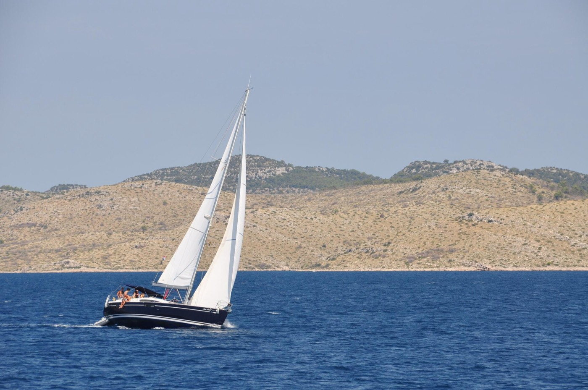

Tekne kiralama19kiralama bölgesi
Teknenin tamamı sizin
Dümen sizde ya da kaptanlı: yelkenli, katamaran ve motoryat. Ege'den Adriyatik'e, rotayı siz çizersiniz.
- Türkiye: Bodrum, Marmaris, Göcek, Fethiye, Çeşme, Antalya, İstanbul
- Yurt dışı: Yunanistan, Hırvatistan'da 8 bölge, Mallorca, Miami
İlanlar:SamBoatSkipperCityViravira